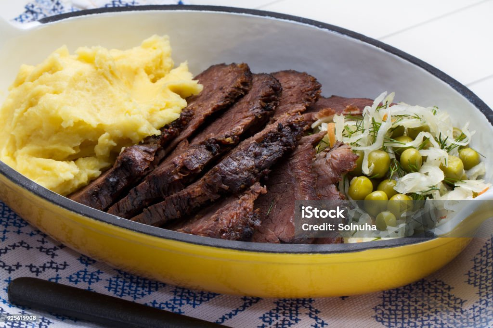

Sadza Recipe

Ingredients
-
4 1/2 cups cold water
-
6 cups hot water
-
3 cups white maize meal(mealie meal)
Instructions
- Bring 6 cups of water to boil.
- Meanwhile add 4 ½ cups of cold water to a large pot and slowly stir in the corn meal, mixing continuously
with a big wooden spoon to break apart any lumps.
- Once the consistency has become smooth, turn the fire on medium heat and gradually add the boiling water,
stirring constantly to keep the mixture from clumping or sticking to then pan as it cooks.
- As the mixture heats up you will notice it start to change consistency becoming thicker and smoother until
it becomes like that of a porridge.
- Adjust the consistency as necessary while cooking: if the sadza is too thin, add more cornmeal, a little at
a time to prevent lumps from forming. If it's too thick add a little more hot water.
- Stir often as the sadza cooks, for about 10-15 minutes until it reaches the right texture.
- When done, turn the heat off, cover, and allow it to rest for a couple of minutes before serving.
Enjoy!
Back